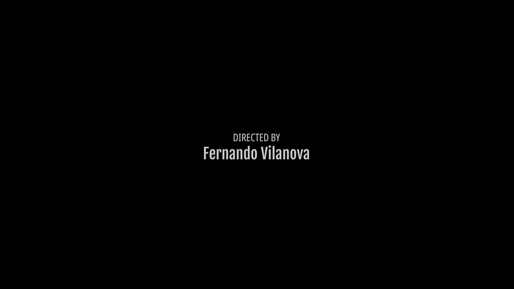

Post-Production
Delivery Guide
Everything an editor needs, in order. Start by building the project to spec, then follow the four stages. Open any stage for its steps and exact export settings.
Create the project first
Set everything up before you import a single frame. Build the timeline to the core spec, then bring in the footage so it never inherits a clip’s settings.
- 1Create a new project for the job.
- 2Create the sequence / timeline using the core-spec values (4K · square · 24 fps · progressive) — see the exact menu paths below.
- 3Only then import the proxies. Never let a dropped clip define the sequence.
New Sequence → Settings tab
- Editing Mode
Custom - Timebase
24 fps - Frame Size
3840 × 2160 - Pixel Aspect Ratio
Square Pixels (1.0) - Fields
No Fields (Progressive)
Project Settings (⇧9) → Master Settings — on an empty project
- Timeline Resolution
3840 × 2160 UHD - Timeline Frame Rate
24 - Pixel Aspect Ratio
Square
⚠ Frame rate locks once media is added — set it before importing.
The core spec
One timeline setting, used on every sequence, comp and nested timeline.
Download the visual assets
The brand overlays every project uses. Grab the pack, then place them per the rules on each card.
↓ Download all assets (.zip)Fujifilm bug
↓ PNG{kind=link}
Sits top-left over the whole video. Never over the intro, the end cards, or while images are on screen.
Letterbox
↓ PNG{kind=link}
Black bars, kept consistently across the body of the film.
Intro sequence
↓ MP4Plays clean at the very start. No bug over the intro.

End card per project
Credits + Fujifilm info, supplied per project. The last frame holds on the end-card text — never cut to black.
Four stages, start to finish
Each stage shows its steps and what it produces. Click to expand.
- Footage. We deliver proxies that mirror the original shoot’s folder structure — edit with these. We keep and archive the original RAW; you never edit the originals directly.
- Grantee images. During the edit you’ll receive the project’s photos as JPG placeholders. Drop them in temporarily — at picture lock they’re swapped for the final processed images from the grantees.
- Download the brand assets (bug · letterbox · intro) from the Assets section before you start.
- Name every export for its stage / status. See Naming.
required Status slate at the very start
On every export that is not final / picture-lock, add this card at the absolute beginning. It tells everyone the current post-production stage and project version.
[PHOTOGRAPHER NAME]
FUJIFILM GFX CHALLENGE 2025
NO COLOR GRADE
NO SOUND MIX
NO TITLE CARDS
NO VFX
Director: Fernando Vilanova
[YY-MM-DD]
- Font
Arial Regular · 48 pt - Alignment
Centered (H & V) - Colors
White #FFFFFF on Black #000000 - Duration
5 seconds
export Review version
For every feedback round. → Frame.io
QuickTime · H.264 · 3840×2160 · 24 fps · VBR 2-pass · 20 Mbps · .mov
Premiere’s “H.264” format outputs .mp4. For H.264 in a .mov, choose QuickTime → Video Codec H.264. Full steps in Recipe A.
1 Request metadata graphics
- Send the full list of images used in the cut — we use it to request the metadata graphics (PNG overlays that ride on top of each image).
- Confirm every final image is sRGB; convert anything else first to keep colors identical.
2 Audio handoff
- Export an AAF with embedded clips so sound design gets every channel / line separated.
- Add a 1080p H.264 reference (.mp4 · 20 Mbps) so they can sync to picture.
3 Color prep
- Export an XML of the timeline with NO effects, so the colorist grades the raw footage.
- Normalize any retimes to 100% before exporting the XML. Example: a shot running at 300% → bring it back to 100% so the colorist grades the original file; you re-apply the speed to the graded clip afterward.
- We send the original files to the colorist together with this XML.
Color returns a single ProRes 422 HQ you lay straight into the delivery timeline.
On a new delivery timeline, bring in the graded ProRes from color and the final mix from sound, then export two versions.
Keeps: intro card, end card, and the photos.
Nothing else — no bug, no letterbox, no metadata overlays, no title cards, no subtitles, no VFX.
Everything on: bug, letterbox, metadata overlays, title cards, subtitles, intro & outro.
End on the end-card text — never cut to black.
export Master settings (both versions)
QuickTime · Apple ProRes 422 HQ · 3840×2160 · 24 fps · .mov
Upload to Frame.io or Dropbox. Full steps in Recipe E.
Specs & details
Everything technical, on demand. Open what you need.
- TOPMetadata graphic (PNG)
Always directly above its image, for as long as that image is shown.
- ↑Fujifilm bug
Over the whole video — except images, intro and end cards.
- ↑Letterbox
Maintained consistently across the body.
- ↑Title cards / subtitles
On for the master · off for the clean version.
- BASEPicture (color + edit)
Graded footage and final images.
Plays clean — no bug over the intro.
Credits & Fujifilm info. The last frame holds on the end-card text — never cut to black.
Review & Online — 4K H.264 MOV @ 20 Mbps
- Format
QuickTime - Video Codec
H.264 - Size
3840 × 2160 - Frame Rate
24 - Bitrate
VBR 2-pass · 20 Mbps
Premiere’s “H.264” format gives .mp4. For H.264 in a .mov, choose QuickTime → Video Codec H.264.
- Format
QuickTime - Codec
H.264 - Resolution
3840 × 2160 - Frame Rate
24 - Quality
Restrict to 20000 Kb/s
Audio reference — 1080p H.264 MP4 @ 20 Mbps
- Format
H.264 - Size
1920 × 1080 - Frame Rate
24 - Bitrate
VBR 2-pass · 20 Mbps - Container
.mp4
- Format
MP4 - Codec
H.264 - Resolution
1920 × 1080 - Quality
Restrict to 20000 Kb/s
Audio handoff — AAF (embedded clips)
File → Export → AAF
- Sample Rate
48000 Hz - Bit Depth
24-bit - Audio
Embed · Breakout to Mono - Handles
1–2 s
Media Pool → right-click timeline → Export → AAF
- Audio
Embedded - Sample Rate
48000 Hz · 24-bit - Handles
1–2 s
XML export — clean conform for color
File → Export → Final Cut Pro XML (.xml)
Remove effects & reset retimes to 100% first, so the colorist works on the raw footage.
Media Pool → right-click timeline → Export → FCP 7 XML / FCPXML
Color return & Masters — ProRes 422 HQ
- Format
QuickTime - Video Codec
Apple ProRes 422 HQ - Size
3840 × 2160 - Frame Rate
24
- Format
QuickTime - Codec
Apple ProRes - Type
ProRes 422 HQ - Size
3840 × 2160
| Deliverable | Codec / Container | Resolution | FPS | Bitrate | Destination |
|---|---|---|---|---|---|
| Proxies (ingest) | Blackmagic Proxy | — | 24 | — | Editors |
| Review cut | H.264 · .mov | 3840 × 2160 | 24 | 20 Mbps | Frame.io |
| Audio handoff | AAF (embedded) | — | 24 | — | Sound design |
| Audio reference | H.264 · .mp4 | 1920 × 1080 | 24 | 20 Mbps | Sound design |
| Color conform | FCP7 XML + originals | — | — | — | Colorist |
| Color return | ProRes 422 HQ · .mov | 3840 × 2160 | 24 | — | Editor |
| Master — Clean | ProRes 422 HQ · .mov | 3840 × 2160 | 24 | — | Frame.io / Dropbox |
| Master — Full | ProRes 422 HQ · .mov | 3840 × 2160 | 24 | — | Frame.io / Dropbox |
Date_Fujifilm_GFX_Name_Status_Resolution_Codec.ext
260603_Fujifilm_GFX_Jacob_ReviewV3_4K_H264.mov260603_Fujifilm_GFX_Jacob_Online_4K_H264.mov260603_Fujifilm_GFX_Jacob_MasterClean_4K_422HQ.mov260603_Fujifilm_GFX_Jacob_MasterFull_4K_422HQ.mov
Date YYMMDD · Status ReviewV#, Online, MasterClean, MasterFull · Resolution 4K · 1080p · Codec H264 · 422HQ · AAF
- Proxy
- Lightweight copy of the RAW for fast editing; delivered in the original folder structure.
- Status slate
- The 5-second card at the start of non-final exports stating the post stage & version.
- Picture lock
- Edit is final — no more timing or shot changes. Triggers metadata, audio & color.
- Bug
- The Fujifilm logo, top-left. Off over images, intro and end cards.
- Metadata graphic
- PNG overlay on top of each final image, from the Fuji team.
- AAF
- Audio interchange carrying separated tracks with embedded clips for sound design.
- Clean vs Master
- Clean = intro/end card + photos only. Master = everything on.
- ProRes 422 HQ
- Mastering codec for the color return and both final masters.